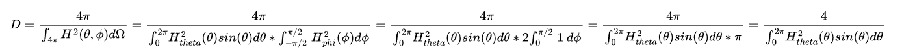

Directivity Calculations are performed following a modified version of Equation 7.6.8 from KFCS. Assuming Uniformity in Phi, we can simplify this and only integrate through theta, as shown in the equation below.
Computation is done using MATLAB's trapz() function, which approximates integration through the Trapezoidal Riemann Sum. Accuracy is proportional to the theta measurement step sizes, with larger step sizes resulting in more gross approximations.
To avoid complications at zero crossings of the sin(theta) function, inputs are broken up in quadrant segments, integrated separately, and then summed. Due to this, the input format for data is quite particular. Some rules for input formats are listed below:
Uniform Theta Step Size: The difference in theta from one data point to the next must be uniform over the entire set of data. Meaning measurements taken from 0 to 360 degrees with a step size of 1 degree will be taken at 0, 1, 2, ..., 358, 359 degrees.
Theta Bounds: The edges of sample points must be in an order expected by Directivity Calculation code. You cannot expect data taken starting at 30 degrees and going to 389 degrees to work properly, and to compensate for this you may need to manually reformat some measurement data before inputting/importing it into this program. Acceptable formats are listed below, with dTheta being the theta step size between each sample:
Sample Overlap: Notice in the Theta Bounds rule that the range does not allow overlapping samples (0 and 360 degrees, etc), so if your imported data contains these overlap points, you must remove them manually, either using the Remove First/Last Element buttons or externally before importing. An example would be data collected between 0 and 360 with a dTheta of 0.1 degree. The correct range for importing would have a minimum theta of 0 degrees and a maximum theta of 359.9 degrees.